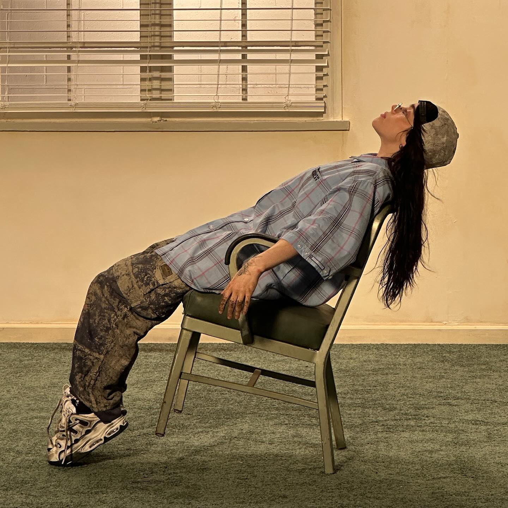

Billie Eilish é uma cantora e compositora norte-americana conhecida por seu estilo único, voz suave e músicas com atmosferas profundas e emotivas. Desde muito jovem ela conquistou o mundo com sua autenticidade e sensibilidade, tornando-se uma das artistas mais influentes de sua geração.

Vencedora do Oscar — Melhor Canção Original (2024)